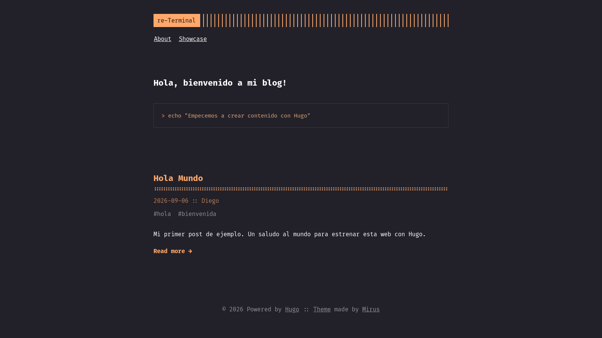

Hugo
Hugo está centrado en la creación de blogs, tiene muchos temas para elegir el diseño que prefieras. Y puedes extenderlos y modificarlos como prefieras.
Mi blog utiliza Hugo!
Inicializar
Instala hugo desde tu gestor de paquetes, si no está disponible, instala go e instalalo manualmente.
Crea una carpeta donde quieras comenzar a trabajar en tu blog, dentro del mismo ejecuta:
❯ hugo new project .
Congratulations! Your new Hugo project was created in /tmp/test.
Just a few more steps...
1. Change the current directory to /tmp/test.
2. Create or install a theme:
- Create a new theme with the command "hugo new theme <THEMENAME>"
- Or, install a theme from https://themes.gohugo.io/
3. Edit hugo.toml, setting the "theme" property to the theme name.
4. Create new content with the command "hugo new content <SECTIONNAME>/<FILENAME>.<FORMAT>".
5. Start the embedded web server with the command "hugo server --buildDrafts".
See documentation at https://gohugo.io/.
Configuración
Vamos a instalar un tema, hay muchos para probar, para este ejemplo usaremos re-terminal
Luego, podemos iniciar el servidor con el tema:
En el repositorio nos dan una configuración de ejemplo. Solo hay que cambiar la ultima linea para apuntarla a nuestro tema local:
baseurl = "/"
languageCode = "en-us"
# Add it only if you keep the theme in the `themes` directory.
# Remove it if you use the theme as a remote Hugo Module.
theme = "re-terminal"
pagination.pagerSize = 5
[params]
# dir name of your main content (default is `content/posts`).
# the list of set content will show up on your index page (baseurl).
contentTypeName = "posts"
# ["orange", "blue", "red", "green", "pink", "paper"]
themeColor = "orange"
# if you set this to 0, only submenu trigger will be visible
showMenuItems = 2
# show selector to switch language
showLanguageSelector = false
# set theme to full screen width
fullWidthTheme = false
# center theme with default width
centerTheme = false
# if your resource directory contains an image called `cover.(jpg|png|webp)`,
# then the file will be used as a cover automatically.
# With this option you don't have to put the `cover` param in a front-matter.
autoCover = true
# set post to show the last updated
# If you use git, you can set `enableGitInfo` to `true` and then post will automatically get the last updated
showLastUpdated = false
# set a custom favicon (default is a `themeColor` square)
# favicon = "favicon.ico"
# Provide a string as a prefix for the last update date. By default, it looks like this: 2020-xx-xx [Updated: 2020-xx-xx] :: Author
# updatedDatePrefix = "Updated"
# set all headings to their default size (depending on browser settings)
# oneHeadingSize = true # default
# whether to show a page's estimated reading time
# readingTime = false # default
# whether to show a table of contents
# can be overridden in a page's front-matter
# Toc = false # default
# set title for the table of contents
# can be overridden in a page's front-matter
# TocTitle = "Table of Contents" # default
# you can set a banner on the top of the page with a call to action
# defaults: dismissible = false; URL is optional
# [params.banner]
# dismissible = false
# text = "Check it out on GitHub"
# url = "https://github.com/mirus-ua/hugo-theme-re-terminal"
[params.twitter]
# set Twitter handles for Twitter cards
# see https://developer.twitter.com/en/docs/tweets/optimize-with-cards/guides/getting-started#card-and-content-attribution
# do not include @
creator = ""
site = ""
[languages]
[languages.en.params]
languageName = "English"
title = "re-Terminal"
subtitle = "A simple, retro theme for Hugo"
owner = ""
keywords = ""
copyright = ""
menuMore = "Show more"
readMore = "Read more"
readOtherPosts = "Read other posts"
newerPosts = "Newer posts"
olderPosts = "Older posts"
missingContentMessage = "Page not found..."
missingBackButtonLabel = "Back to home page"
minuteReadingTime = "min read"
words = "words"
[languages.en.params.logo]
logoText = "re-Terminal"
logoHomeLink = "/"
[languages.en.menu]
# Submenus is available since v2.1.0
# [[languages.en.menu.main]]
# identifier = "submenuParent"
# name = "Submenu"
# [[languages.en.menu.main]]
# parent = "submenuParent"
# identifier = "anItem"
# name = "AnItem"
[[languages.en.menu.main]]
identifier = "about"
name = "About"
url = "/about"
[[languages.en.menu.main]]
identifier = "showcase"
name = "Showcase"
url = "/showcase"
[module]
# In case you would like to make changes to the theme and keep it locally in you repository,
# uncomment the line below (and correct the local path if necessary).
# --
# replacements = "github.com/mirus-ua/hugo-theme-re-terminal -> themes/re-terminal"
[[module.imports]]
path = 're-terminal'
El proyecto tiene la siguiente estructura:
.
├── archetypes
├── assets
├── content
├── data
├── hugo.toml
├── i18n
├── layouts
├── public
├── resources
├── static
└── themes
Aunque la carpeta que por ahora más te interesa es content:
Crea el archivo _index.md:
Y el archivo hola-mundo.md dentro de posts:
+++
title = "Hola Mundo"
date = "2026-09-06"
author = "Random"
tags = ["hola", "bienvenida"]
keywords = ["hola", "mundo", "primer post"]
description = "Mi primer post de ejemplo. Un saludo al mundo para estrenar esta web con Hugo."
hideComments = true
+++
# ¡Hola Mundo!
Este es mi **primer post de ejemplo**. Sirve para comprobar que todo funciona y para ver cómo se ve el tema.
Cuando lances el servidor con hugo server deberías ver tu página con el tema aplicado:
